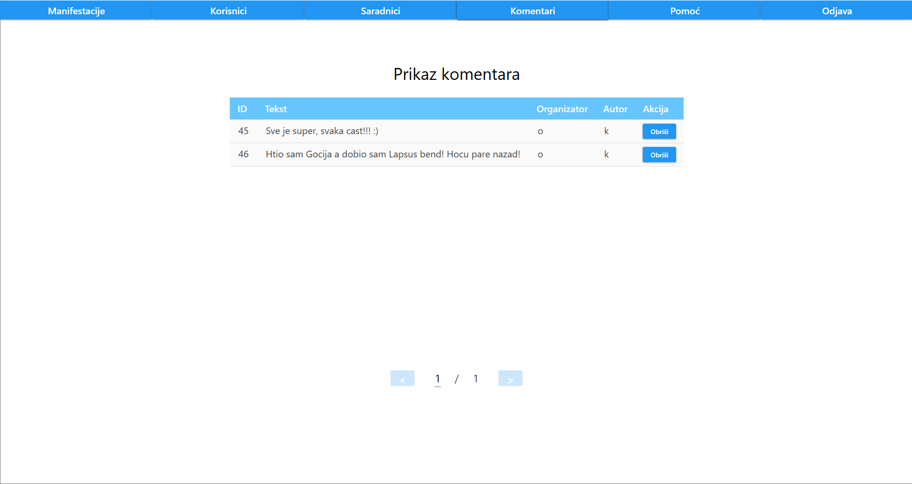
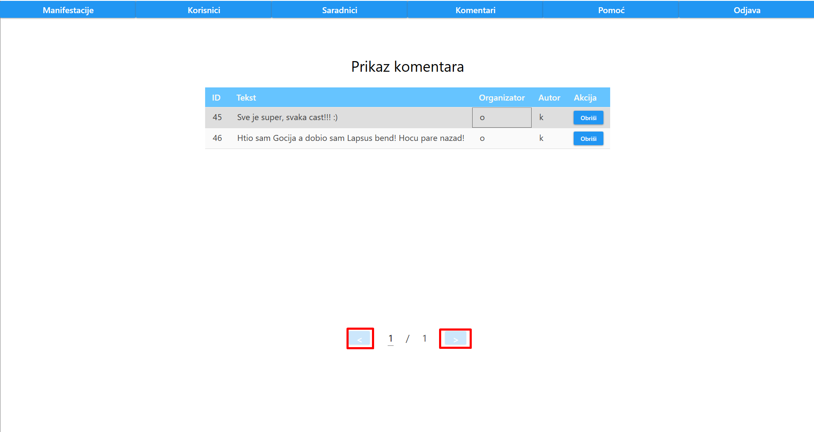
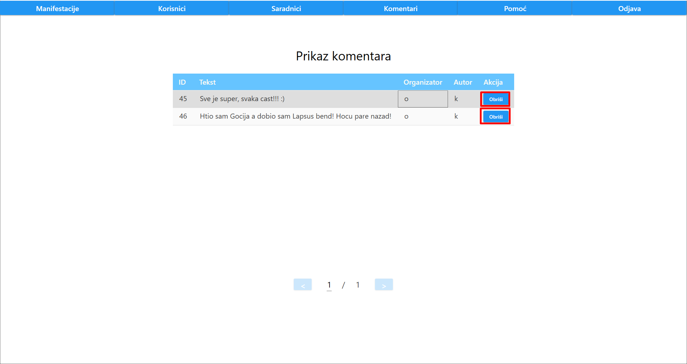

Nakon klika na dugme "Komentari" ili istovremenim klikom CTRL i R tipke, korisniku se prikazuje lista svih komentara
Prikaz komentara je odradjen tabelarno, gde je za svaki komentar ispisan njen ID, tekst, korisničko ime organizatora i autor komentara.
Takodje, uradjena je paginacija komentara tako da se na jednoj stranici nalazi najvise 5 komentara
Ukoliko admin zeli da predje na narednu ili prethodnu stranicu, to mu je omoguceno klikom na dugme ">", odnosno "<"
Ukoliko admin zeli da obrise neki komentar, to mu je omoguceno klikom na dugme "Obrisi" pored zeljenog komentara
